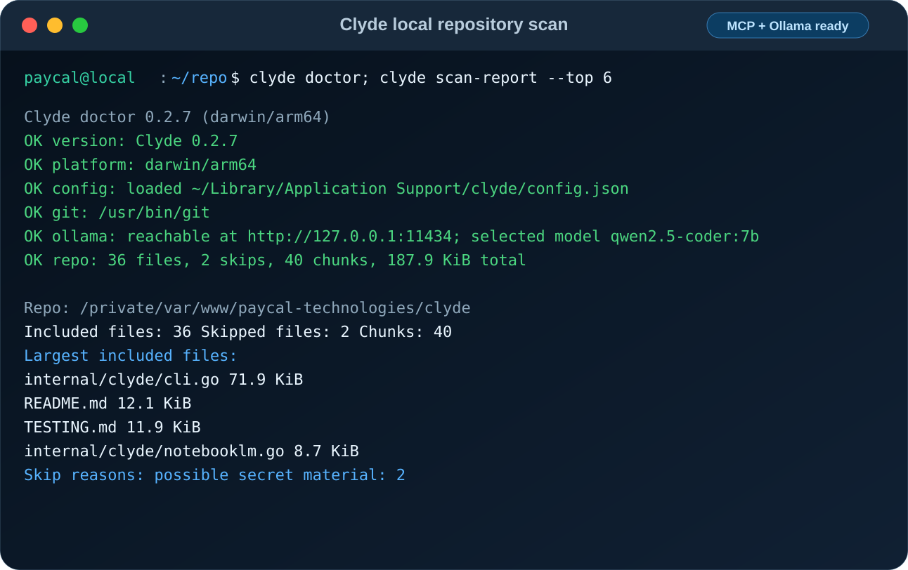

Clyde Help / Testing
Clyde Testing Guide
How to test Clyde's repository scanning, bundling, CLI, config, Ollama, NotebookLM, protocol, and cross-platform behavior.

Quick Start
gofmt -w <changed .go files>
go test ./...Release Smoke
go test ./...
go test -race ./internal/clyde
go vet ./...
go run ./cmd/clyde --about
go run ./cmd/clyde help --json
go run ./cmd/clyde doctor --json
go run ./cmd/clyde scan-report . --json
GOOS=windows GOARCH=amd64 go build -o /tmp/clyde.exe ./cmd/clydeSuite Map
| Area | What It Protects |
|---|---|
| Scanner | Secret skips, include/exclude matching, invalid paths, size limits, and symlink skipping. |
| Bundler | Chunk boundaries, digest verification, manifest/chunks output, discovery provenance, secret-scan evidence, skip records, and invalid output paths. |
| CLI | Preview, scan-report, bundle, sync guards, help, JSON catalog, doctor, about links, completions, numeric flags, and prompt limits. |
| Config | Config loading, env overrides, URL validation, string hardening, numeric limits, permissions, defaults, symlink-parent refusal, and config commands. |
| Ollama and agent | Model listing, generation, streaming, input hardening, remote URL guard, prompt ordering, and UTF-8-safe truncation. |
| NotebookLM, MCP, JSON-RPC | Receipts, destructive deletion resume safety, backend identity, redacted subprocess errors, bounded buffers, MCP single-flight requests, MCP frames, JSON-RPC failures, and request body limits. |
Focused Commands
go test ./internal/clyde -run 'TestScanRepo'
go test ./internal/clyde -run 'TestMakeChunks|TestWriteBundle|TestSplitText'
go test ./internal/clyde -run 'Test.*Help|Test.*Doctor|Test.*Completion|TestPreview|TestScanReport|TestBundle'
go test ./internal/clyde -run 'TestLoadConfig|TestConfigCommand'
go test ./internal/clyde -run 'TestOllama|TestCLIAsk|TestCLIModels|TestAgentRejectsRemote'
go test ./internal/clyde -run 'TestMCP|TestSyncReceipt|TestDeleteExisting'Cross-Platform Build
for target in darwin/amd64 darwin/arm64 linux/amd64 linux/arm64 windows/amd64 windows/arm64; do
os="${target%/*}"
arch="${target#*/}"
suffix=""
if [ "$os" = windows ]; then suffix=".exe"; fi
GOOS="$os" GOARCH="$arch" go build -o "/tmp/clyde-${os}-${arch}${suffix}" ./cmd/clyde
done